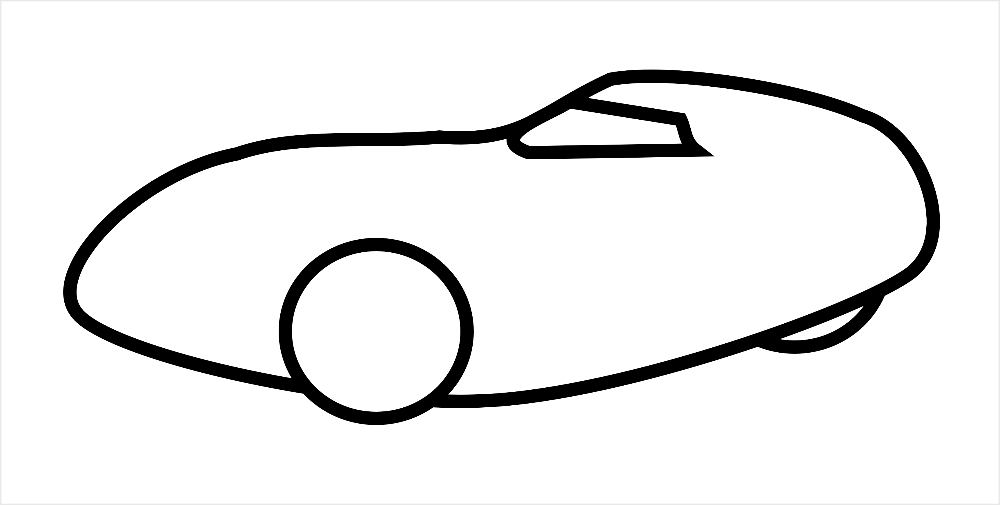

Často se stává, že se lidé ptají lehocyklistů jestli šlapou rukama. Z toho plyne, že veřejnosti chybí korektní povědomí o různých druzích kol a pletou si handbiky a lehokola. Abychom Vám všem v tom udělali pořádek, vytvořili jsme pro Vás přehlednou stránku, kde najdete veškeré informace a důležité rozdíly.
 |
||
Lehokola |
Velomobily |
Handbiky |